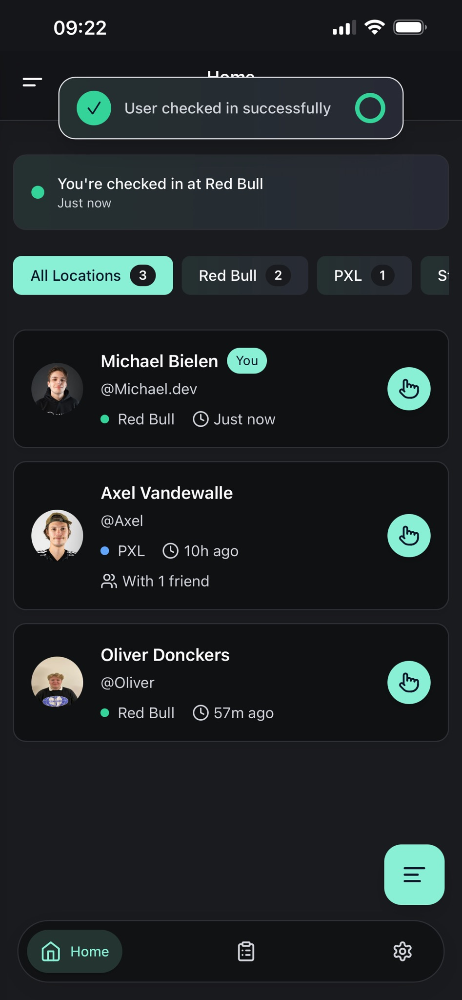
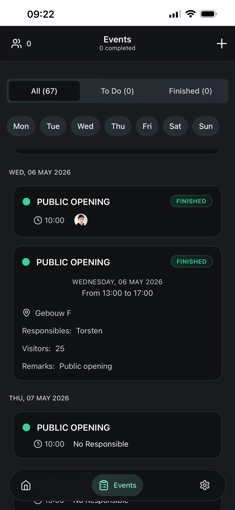
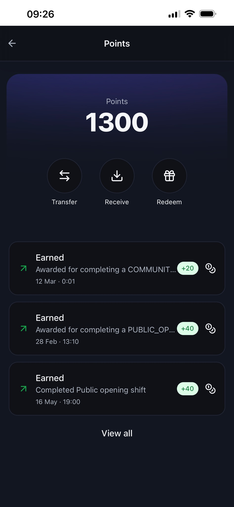
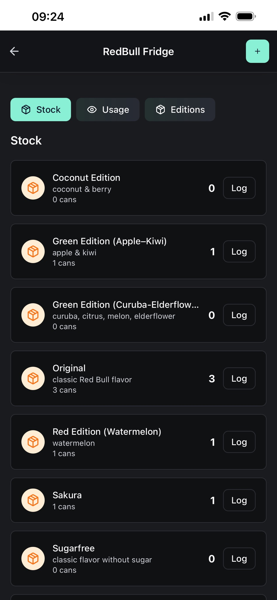
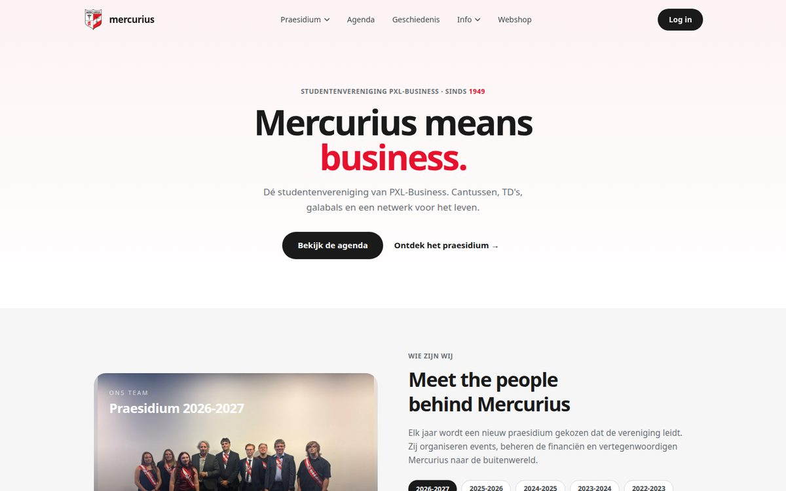
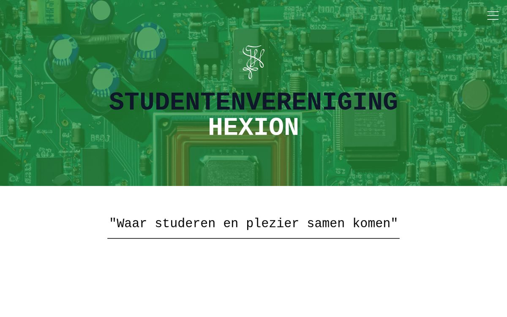
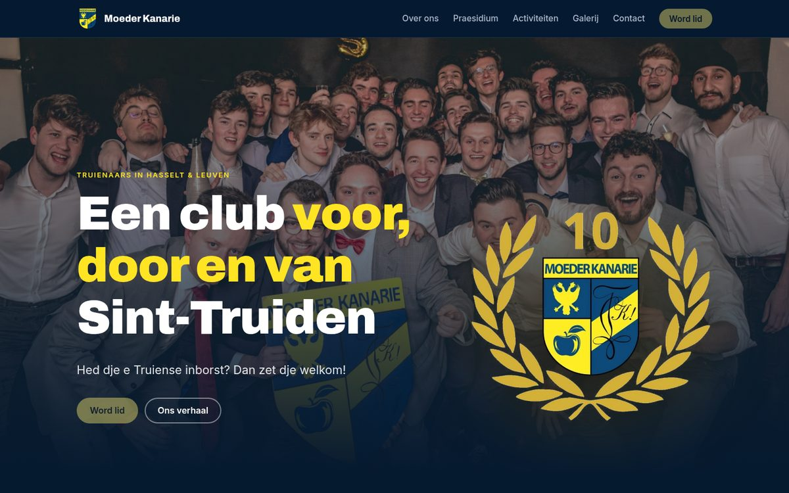

Webapplicaties op maat
Interne tools en platformen met gebruikersbeheer, rollen, planning en rapportering, gebouwd op C#/.NET en SQL.
Beschikbaar voor nieuwe opdrachten
Ik bouw webapplicaties, API's en backends die schaalbaar en onderhoudbaar blijven, van de eerste analyse tot de oplevering.
Full-stack developer met een voorkeur voor de backend: duidelijke domeinmodellen, goede API's en architectuur die meegroeit met het product.
Ik studeerde in 2026 af als Bachelor Toegepaste Informatica aan Hogeschool PXL, met een specialisatie in applicatieontwikkeling. Mijn grootste project, de Red Bull Gaming Hub, heb ik drie keer herschreven: van een Flutter- en Firebase-prototype tot een .NET Aspire microservices-platform volgens Domain Driven Design. Tijdens mijn stage bij Zeta Global paste ik event-driven principes toe in een enterprise-omgeving op AWS.
Naast mijn studies werkte ik bijna drie jaar als IT-consultant bij Beego, waar ik klanten van de ING-app hielp met technische problemen en integraties met itsme en Homebank. Zo leerde ik technische problemen uitleggen in mensentaal.
Buiten het werk draai ik een homelab om te experimenteren met netwerken en self-hosting, verdiep ik me in open source en AI, en ga ik geregeld boulderen met vrienden.
Als zelfstandige neem ik het volledige traject op: analyse, klantcontact, ontwikkeling en oplevering.
Interne tools en platformen met gebruikersbeheer, rollen, planning en rapportering, gebouwd op C#/.NET en SQL.
Snelle, onderhoudbare websites voor verenigingen en kmo's, met agenda, webshop of ledenlogin waar nodig.
REST API's, microservices en integraties met bestaande systemen, met CQRS, event-driven en DDD als dat past.
Containerisatie met Docker, CI/CD-pipelines in Azure DevOps en deployment op Azure of AWS.
Een selectie van platformen en websites die ik bouwde, alleen of in team.
Case study · in partnership met Red Bull
De PXL Gaming Hub draait op vrijwilligers. Shifts, evenementen, beloningen en de Red Bull-voorraad werden manueel bijgehouden, en de partners verwachtten correcte rapportering.
Een mobiele app en backend die de volledige werking digitaliseert: inchecken met locatie en reminders, evenementen en openingsuren plannen, punten toekennen, voorraad per editie bijhouden en exports maken voor de boekhouding.
Gebouwd samen met Ronan Stiers en Dries Bielen.




Eigen product · in ontwikkeling 2026
Bestaande ticketingdiensten zijn duur voor kleine organisaties zoals clubs en studentenverenigingen. MyTickets is een betaalbaar, zelf gehost alternatief dat ticketverkoop, leden en betalingen aan de bar samenbrengt.
Organisaties krijgen een eigen pagina waar gasten zich registreren, tickets kopen en tegoed opladen. Een NFC-kaart gekoppeld aan hun account opent de deur en betaalt aan de bar, met tegoed dat per organisatie apart blijft.
Solo gebouwd van productidee tot deployment: domeinmodel, API, frontend, betalingsflow, tests en de self-hosted infrastructuur.

Platform voor de studentenvereniging van PXL-Business met praesidium-archief per academiejaar, agenda, webshop en ledenlogin.
Symfony · Twig · Tailwind · PostgreSQL

Website voor studentenvereniging Hexion met praesidium, sponsors, verenigingsinfo en evenementen.
Nuxt · Plesk

Website voor de Sint-Truidense stadsclub in Hasselt en Leuven: cantussen, clubavonden en zaalvoetbal.
Website
Eenmanszaak · Sint-Truiden
Web- en softwareoplossingen op maat voor klanten met C#/.NET, web technologies en SQL. Volledige verantwoordelijkheid van analyse en klantcontact tot oplevering.
Zeta Global · Hasselt
Backend development in een enterprise-omgeving. Event-driven principes toegepast in echte applicaties, met AWS cloud-services, in een Agile/Scrum-team.
Beego · Limburg
Technische support en troubleshooting voor de ING bank-applicatie. Support bij systeemintegratie met itsme en Homebank, en rechtstreekse klantcommunicatie.
RZ Heilig Hart · Tienen
Infrastructuursupport en troubleshooting in een ziekenhuisomgeving. Opzet van een Disaster Recovery-server.
Ik sta open voor full-stack rollen met C#/.NET en voor freelance opdrachten in Limburg en daarbuiten.
Stuur een e-mail